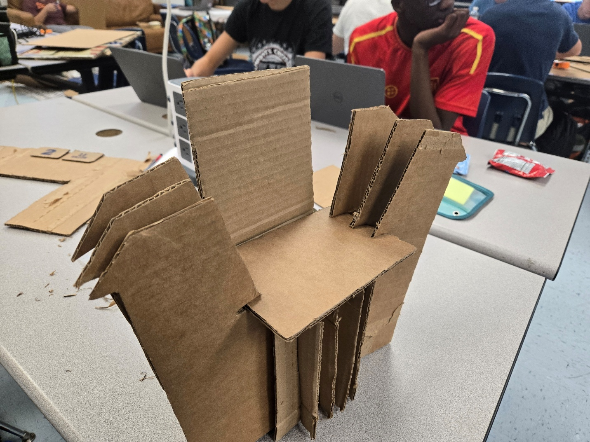
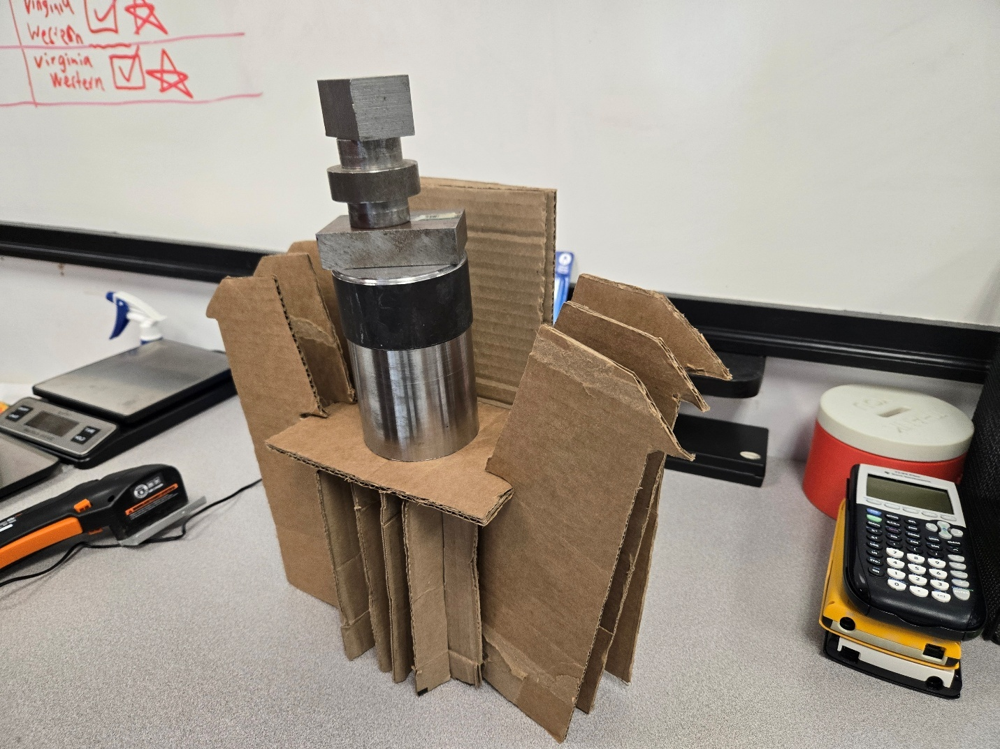
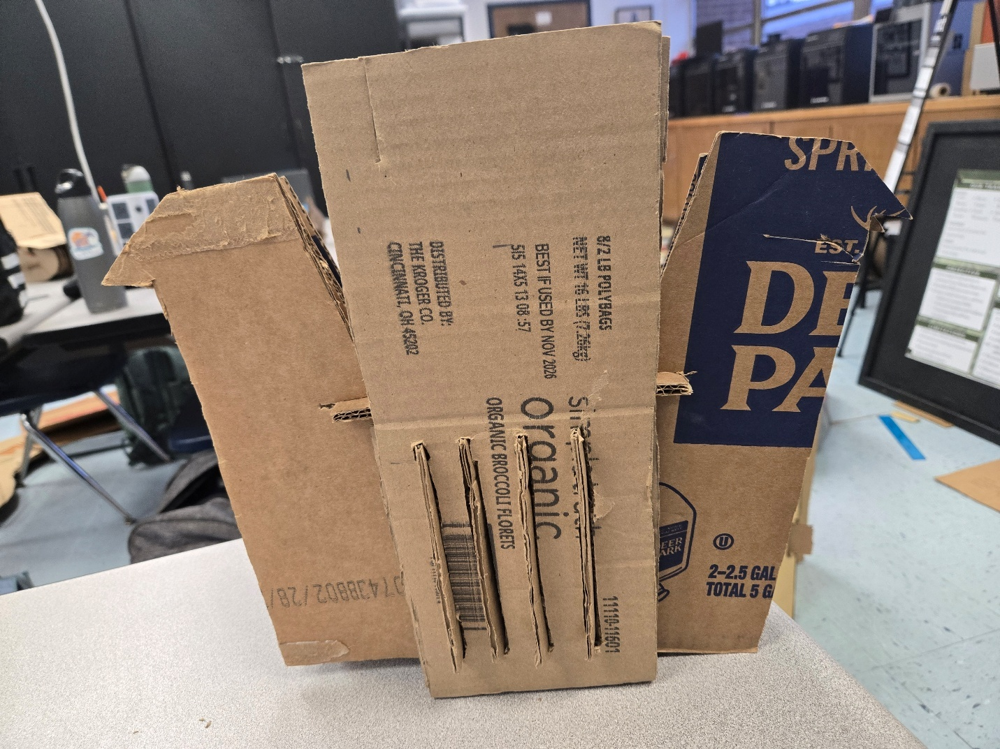
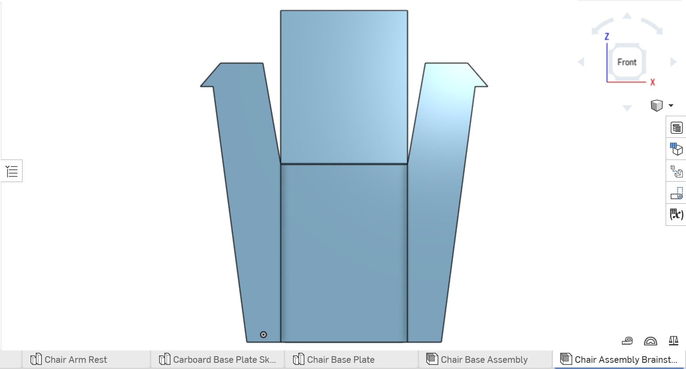
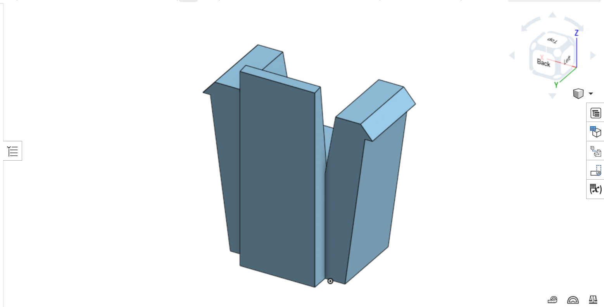

Case study 05 · Structural design · Prototyping
Chair & Pencil Holder
The first chair showed us exactly where the design was fighting us. The back panel was too long, the armrests were awkward to fit, and rough cuts kept the pieces from lining up. We shortened the back, simplified the armrests, and cut the second version more carefully. It was stronger and much easier to assemble.

The brief
Our group had to turn flat cardboard into a full-size chair that someone could actually sit in without making the assembly too complicated.
How I approached it
- 01
We built the first full-size version and paid attention to how the pieces behaved during a real assembly.
- 02
We traced the worst problems to the long back panel, angled armrests, and inconsistent cuts.
- 03
We shortened the back, reduced the armrest length, and straightened the sides to make the structure easier to support.
- 04
We used more accurate measurements and cleaner cuts so the physical pieces matched the CAD model more closely.
From the build




What worked
- Two full-size iterations
- Back and armrest redesign
- CAD model and physical build
What I learned
The first chair was not a waste. It exposed problems that looked fine on a screen. I saw how one small dimensional change could affect strength, fit, and the entire assembly experience.
If I built it again
I would load-test the chair, record where it bends first, and use that evidence to remove unnecessary cardboard without weakening the structure.